Portfolio
Discover our gallery and see how we’ve transformed outdoor spaces, maintaining the goal of creating stunning results for our clients.



Discover our gallery and see how we’ve transformed outdoor spaces, maintaining the goal of creating stunning results for our clients.